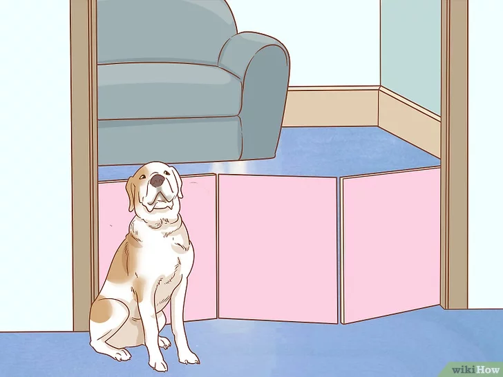
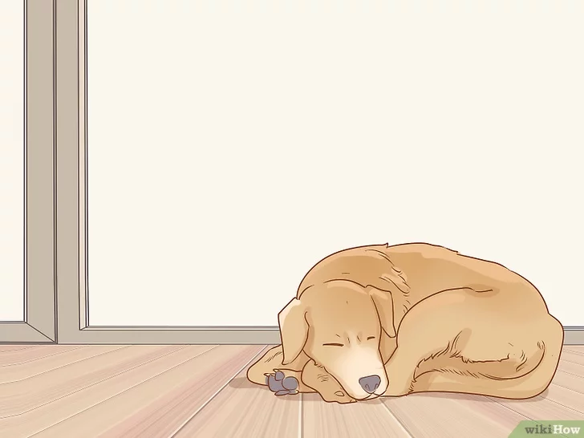
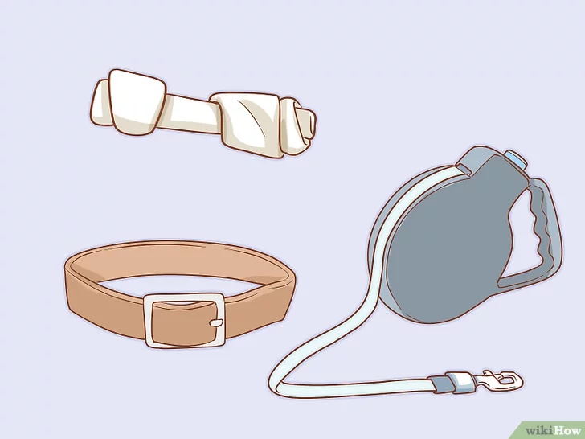

Хотя многие вещи могут показаться безобидными для вашей собаки или вы не ожидаете, что она может заинтересоваться ими, все же лучше держать мелкие предметы и человеческие игрушки не на полу, вне зоны досягаемости вашей собаки, где она будет проводить время.
В вашем доме и во дворе есть множество продуктов, опасных для собак , которые должны храниться подальше от них и запираться в специальных местах для хранения или там, где у собаки не будет к ним доступа. К самым распространенным из них относятся бытовые чистящие средства, инсектициды, удобрения и отрава для мышей и крыс.
Как комнатные, так и растения, растущие во дворе, могут оказаться токсичными, в том числе рододендрон, хризантемы, олеандр. Чтобы получить полный список токсинов, опасных для домашних животных, выясните, какие растут у вас дома и в саду, и обратитесь к ветеринару.
Кроме того, токсичными могут быть лекарственные препараты, как для людей, так и для животных, особенно при употреблении их в больших количествах. Некоторые из продуктов, которые мы едим, в том числе шоколад, лук, изюм и виноград, и даже жевательная резинка без сахара, токсичны для собак и должны храниться вне их досягаемости.
Прежде чем привести собаку домой, первым делом вам следует решить, где она будет проводить время. Подумайте о том, к каким участкам дома собаке будет разрешен доступ и какие зоны будут под запретом. Эти правила должны быть установлены с самого начала, дабы избежать путаницы.
Вашей собаке нужно специально отведенное место для еды и сна, а также достаточное пространство для игры и физических нагрузок. По началу, вы можете ограничить зоны, к которым у собаки будет доступ, чтобы внимательно следить за ней до тех пор, пока вы лучше не узнаете ее и ее поведение.
Подходящим местом, куда можно поставить чашки для еды и воды, может стать кухня или другое место, которое удобно мыть. Как только вы определились с таким местом, следует постоянно держать их там.
Теперь вам нужно решить, где будет спать ваша собака. Некоторым людям нравится, когда собака спит с ними вместе в кровати, в то время как другие предпочитают организовать отдельное место или коробку для сна. Имейте в виду, что если вы позволите собаке хоть раз поспать в вашей кровати, потом будет гораздо сложнее заставить ее спать самостоятельно.
Размеры и активность собаки станут критерием для определения размеров пространства, нужного для игры и физических нагрузок. Как правило, чем крупнее собака, тем больше места ей понадобится
Кое-что уже будет иметься у вашей собаки, но вам понадобится подходящий по размеру ошейник, поводок и пара игрушек для начала. Кроме того, вам понадобятся чашки для еды и воды, ну и сама еда.
Если вы знаете, чем питалась ваша собака, лучше всего продолжать кормить ее той же самой едой, хотя бы поначалу. Приход в новый дом может оказаться стрессом для любой собаки и изменения в ее рационе могут еще больше усугубить этот стресс. Если вы решили изменить ее питание, вы это можете сделать, но убедитесь, что делаете это постепенно, в течение 5-7 дневного периода времени. Это поможет вам избежать таких проблем, как диарея или расстройство желудка, которые могут появиться в результате резкой смены характера питания.
